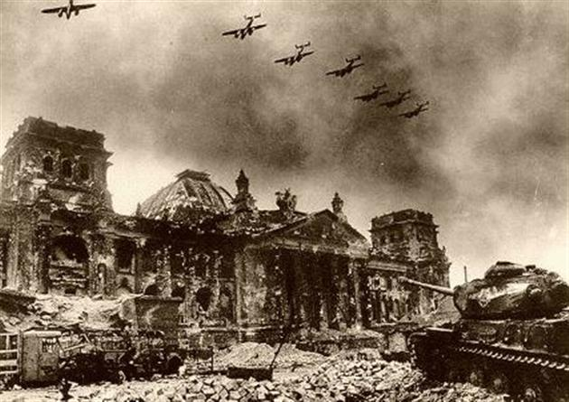
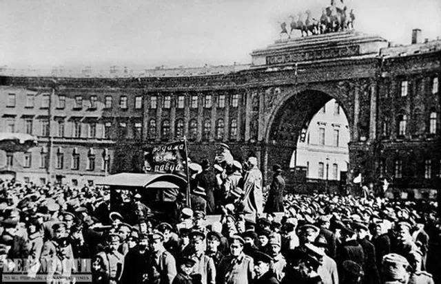
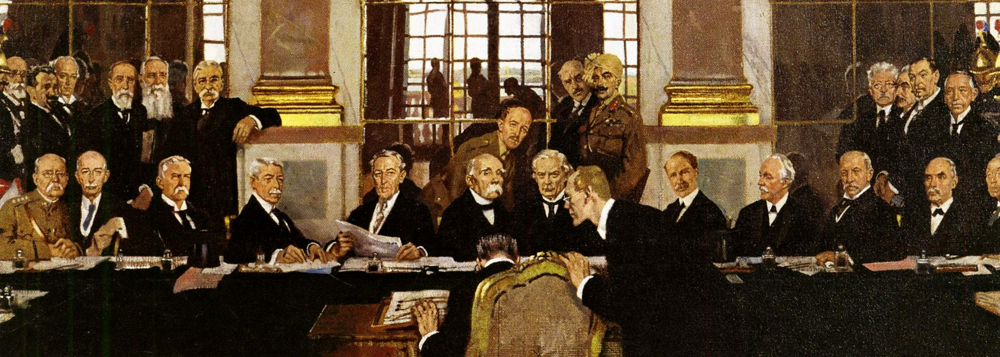
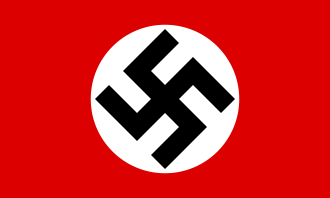
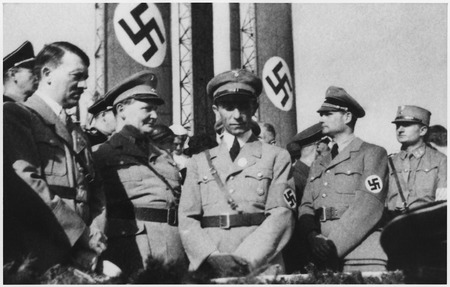
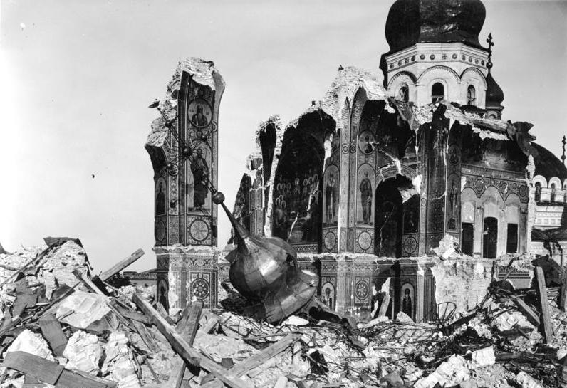

Наслідки для Німеччини
Німеччина після Першої світової війни опинилася у глибокій економічній та політичній кризі.
Версальський договір наклав величезні репарації, що призвело до гіперінфляції. Населення
було розчароване владою і шукало нових лідерів, які б могли повернути країну до її колишньої величі.
Крім того, було обмежено армію Німеччини до 100 тисяч солдатів, а також заборонено мати важке озброєння.

Революції 1917–1923 років
Період революцій після Першої світової війни позначився крахом монархій та змінами у політичній системі.
Найбільше впливу мала Жовтнева революція в Росії, яка започаткувала еру радянської влади.
В Європі відбувалися масові страйки робітників, які вимагали кращих умов праці, прав та зарплат.
У Німеччині Листопадова революція завершила існування монархії.

Версальський договір
Версальський договір 1919 року став ключовим документом після завершення війни.
Він змінив мапу Європи, обмеживши потужність Німеччини та створивши нові незалежні держави.
Території, як Ельзас і Лотарингія, були повернуті Франції, а Польща отримала вихід до Балтійського моря.
Договір викликав гнів у Німеччині, що створило передумови для політичної радикалізації.


Підйом нацизму
Після Першої світової війни у Німеччині виникла ідея реваншу за приниження Версальським договором.
Це стало основою для підйому нацистської партії.
Адольф Гітлер використав економічні труднощі, щоб залучити підтримку населення, обіцяючи
повернути Німеччину до її колишньої слави. Політика нацизму базувалася на ідеях расової переваги
та відновлення територій.

Світ після війни
Перша світова війна змінила політичний та економічний ландшафт світу.
Були створені нові незалежні держави, зруйновано імперії.
У Європі Ліга Націй намагалася забезпечити мир, але внутрішні конфлікти та економічні кризи
призвели до нових протистоянь. Це стало прелюдією до Другої світової війни.